Para quem nunca jogou1 a 4 jogadores30 min10+Edição Galápagos (Asmodee)
· Redação Elite Boardgamers
Resumo em 1 minuto
Você pega 3 peças por turno para montar árvores, montanhas, campos, construções e rios no seu tabuleiro, instala animais nos habitats que criou e vence quem somar mais pontos de paisagens e animais.
No seu turno, você pega as 3 peças de um espaço do tabuleiro central e põe as 3 no seu tabuleiro, empilhando só do jeito permitido.
Quando o seu tabuleiro tem o habitat de uma carta de animal, você tira o cubo de baixo da carta e o põe ali; a carta vale o número mais alto sem cubo.
A partida acaba quando a bolsa se esgota ou alguém fica com 2 ou menos espaços vazios; a rodada é completada e vence quem tiver mais pontos.
Como você aprende: 3 etapas, da mesa montada à contagem de pontosLeitura do essencial: cerca de 10 min
À vista, só o essencial para jogar. O que abre com + é explicação, exemplo, exercício ou regra de caso especial: abra quando precisar.
Montar a mesa passo a passo
A montagem segue a página de preparação do manual p. 2 e 3, na mesma ordem. É igual para 2, 3 ou 4 jogadores; só o modo solo muda, no fim desta seção.
Cartas de espíritos da natureza e cubos de espíritos da natureza
10 cartas e 4 cubos
Bloco de pontuação
1
Livro de regras
1
A caixa e uma mesa de Harmonies montada, com os componentes. Imagem: Libellud
Ponha o tabuleiro central no meio da mesa com o lado de 2-4 jogadores para cimap. 2.
Ponha todas as 120 peças na bolsa e deixe a bolsa perto do tabuleiro central p. 2.
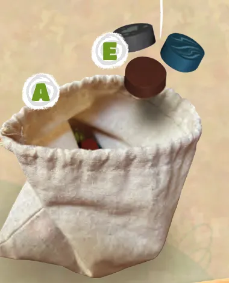
As peças entram na bolsa, que fica ao lado do tabuleiro central. Ilustração: manual Galápagos p. 2
Encha cada um dos 5 espaços do tabuleiro central com 3 peças tiradas da bolsa ao acaso, sem escolher cor. São 15 peças à vista p. 2.
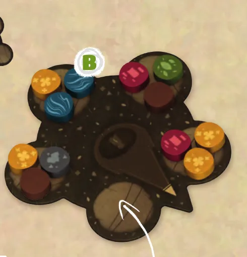
O tabuleiro central sendo enchido: 4 espaços já com 3 peças e o quinto prestes a receber as suas, sorteadas da bolsa; a seta fica no meio. Ilustração: manual Galápagos p. 2
Embaralhe as 32 cartas de animais e abra 5 delas, viradas para cima, perto do tabuleiro central. O resto fica ao lado, virado para baixo: é a pilha de compra. Ponha os 75 cubos de animais ao alcance de todos: é a reserva p. 3.
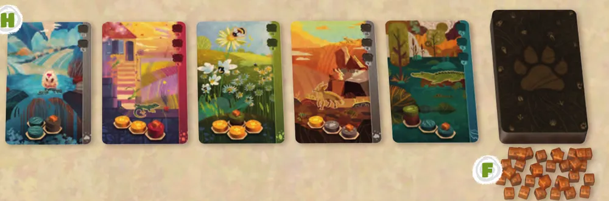
A fileira de 5 cartas de animais abertas, a pilha de compra e, embaixo, os cubos de animais da reserva. Ilustração: manual Galápagos p. 3
Nas primeiras partidas, deixe na caixa as 10 cartas e os 4 cubos de espíritos da natureza. O manual recomenda jogar algumas partidas antes de usá-los p. 3. Este guia explica a variante nas "Situações especiais".
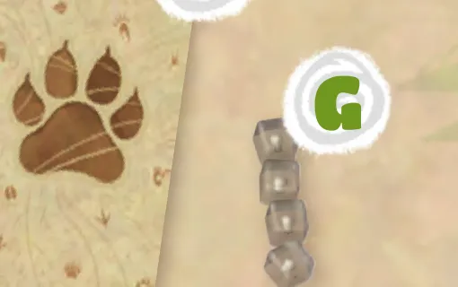
As cartas de espíritos da natureza (o verso com a pata) e os 4 cubos de espíritos, que ficam na caixa nas primeiras partidas. Ilustração: manual Galápagos p. 3
Cada jogador pega um tabuleiro pessoal e uma carta de auxílio, o resumo da pontuação. Todos combinam qual lado do tabuleiro pessoal vão usar, e todos usam o mesmo lado: o lado A pontua a água pelo rio; o B, pelas ilhas p. 8. Cada um deixa a carta de auxílio virada para o lado igual ao dos tabuleiros. Nas primeiras partidas, o manual recomenda o lado A p. 3.
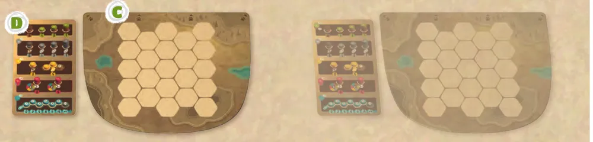
Dois jogadores com o tabuleiro pessoal vazio e a carta de auxílio ao lado, virada para o mesmo lado do tabuleiro. Ilustração: manual Galápagos p. 3
Escolha quem começa: o último jogador a ter visto uma paisagem magnífica. Gire a seta do tabuleiro central para apontar para ele. A vez segue no sentido horário p. 3 e 4.
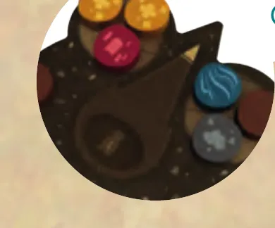
A seta do tabuleiro central virada para o primeiro jogador. Ilustração: manual Galápagos p. 3
Ninguém começa com peças, cartas ou cubos. Tudo o que cada um vai ter sai do tabuleiro central, da fileira de cartas e da reserva durante a partida (p. 2 a 4).
O bloco de pontuação só entra no fim da partida p. 9.
O que muda com o número de jogadoresp. 2, 3 e 11:
Jogadores
Lado do tabuleiro central
Espaços com 3 peças
Cartas de animais abertas
Tabuleiros pessoais e cartas de auxílio que ficam na caixa
1 (solo)
Solo
3
3
3
2
2-4 jogadores
5
5
2
3
2-4 jogadores
5
5
1
4
2-4 jogadores
5
5
nenhum
Com 2, 3 ou 4 jogadores, todas as peças vão para a bolsa e nada mais muda. Ficam na caixa os tabuleiros pessoais e as cartas de auxílio que ninguém pegou e, nas primeiras partidas, os espíritos da natureza.
Antes de começar, confira: tabuleiro central com o lado certo para cima e 3 peças em cada espaço; bolsa com as outras peças; 5 cartas de animais abertas e a pilha de compra ao lado; cubos de animais na reserva; cada jogador com tabuleiro pessoal e carta de auxílio, todos do mesmo lado; a seta apontando para quem começa.
Partida de 3 jogadores, a primeira do grupo. O que está certo?
Todos usam o mesmo lado, e o manual recomenda o A nas primeiras partidas; com 2 a 4 jogadores, o tabuleiro central fica com o lado de 2-4 e há 5 cartas abertas. Ninguém recebe peças na montagem p. 2 e 3.
Comece a jogar em 4 minutos
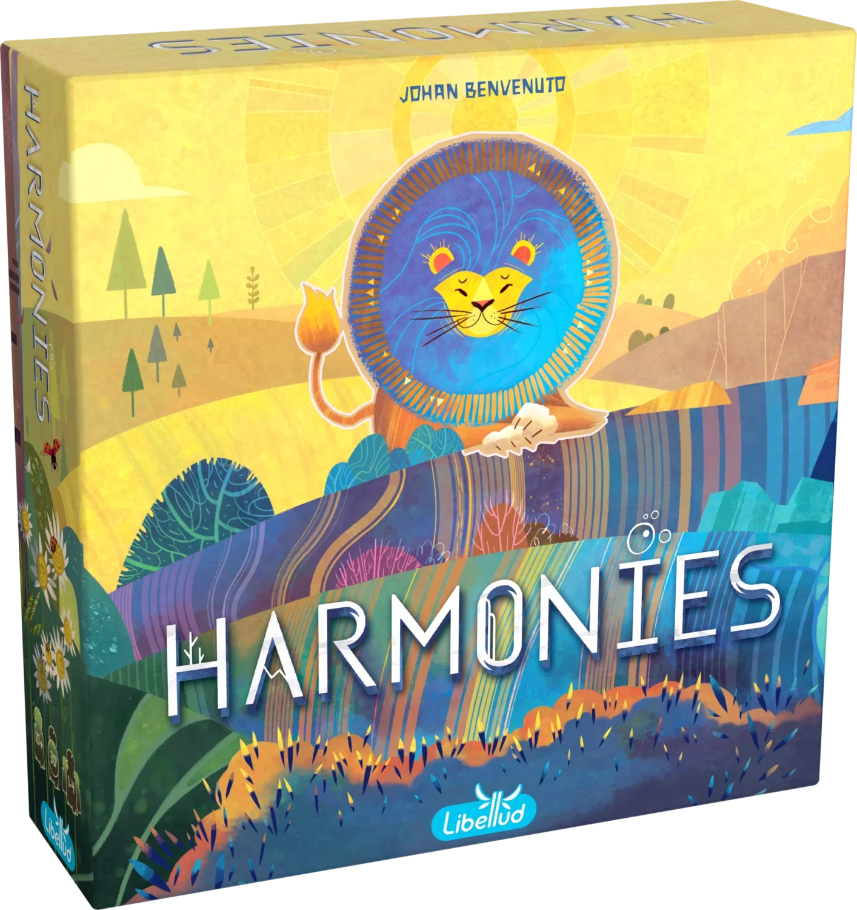
Imagem: Libellud
Meta: em 4 minutos de leitura, montar a mesa e jogar o seu primeiro turno sem abrir o manual.
A ideia do jogo
Você constrói uma paisagem no seu tabuleiro pessoal. Na sua vez, pega 3 peças coloridas e as põe nos espaços do tabuleiro; empilhadas do jeito certo, viram árvores, montanhas e construções, que valem pontos. Quando a paisagem forma o habitat desenhado numa carta de animal, você instala ali um cubo de animal, e a carta passa a valer pontos. Vence quem somar mais pontos no fim.
Monte a mesa
A montagem completa, com figuras, está na seção "Montar a mesa passo a passo", logo acima. O essencial p. 2 e 3:
Tabuleiro central com 3 peças sorteadas em cada um dos 5 espaços; o resto das peças na bolsa.
5 cartas de animais abertas, a pilha de compra e os cubos de animais ao lado.
Cada jogador com um tabuleiro pessoal, todos do mesmo lado (o A nas primeiras partidas).
A seta aponta para quem começa; a vez segue no sentido horário.
Seu primeiro turno
No seu turno, você faz uma ação obrigatória e pode fazer duas opcionais, na ordem que quiser p. 4:
Ação
Quando
O que você faz
Pegar e posicionar peças
Obrigatória, exatamente uma vez
Pega as 3 peças de um dos espaços do tabuleiro central e põe as 3 no seu tabuleiro pessoal
Escolha um espaço do tabuleiro central e pegue as 3 peças delep. 4.
Ponha as 3 no seu tabuleiro pessoal, onde quiser. Uma peça sempre pode ir num espaço vazio p. 4.
Ou empilhe, mas só destes jeitos: cinza sobre cinza (montanha, até 3 de altura); marrom sobre 1 marrom (no máximo 2) e verde sobre 1 ou 2 marrons (árvore); vermelha sobre uma única cinza, marrom ou vermelha (construção). Azul e amarela ficam sempre no chão, e nada vai em cima delas p. 4.
No fim do turno, tire 3 peças da bolsa e ponha no espaço que você esvaziou p. 4.
Ainda não precisa saber
Cartas de animais e cubos: etapa 2. Quanto vale cada paisagem e como se conta o rio: etapas 1 e 3. Fim da partida e desempate: etapa 3. Para o primeiro turno, basta empilhar certo.
Como a partida acaba
A partida termina quando a bolsa está vazia na hora de reabastecer o tabuleiro central, ou quando alguém termina o turno com 2 ou menos espaços vazios (sem peça) no tabuleiro pessoal. A rodada é completada para todos jogarem o mesmo número de turnos, e vence quem tiver mais pontos p. 7.
Prefere ver? As regras completas em vídeo. Ele complementa este guia; em caso de diferença, vale o manual.
HARMONIES | Regras completas (Com exemplos), canal Duque Board Games · abrir no YouTube
0Antes de tudo: o que é este jogoOpcional
Imagem: LibelludAbrir esta seção
Harmonies é um jogo de colocação de peças para 1 a 4 pessoas, a partir de 10 anos, em cerca de 30 minutos, segundo a Libellud. Cada jogador tem o seu tabuleiro pessoal, uma grade de espaços hexagonais, e passa a partida enchendo-o com peças de seis cores. Cada cor é um pedaço de natureza: azul é água, amarela é campo, cinza é montanha, marrom e verde formam árvores, e a vermelha é construção p. 4 e 8.
Os pontos vêm de duas fontes, somadas no fim (p. 7 a 9):
As paisagens. Cada árvore, montanha, campo e construção vale pontos pelo seu formato, e a água vale pelo rio mais comprido (lado A) ou pelo número de ilhas, as áreas que as peças azuis separam (lado B).
Os animais. Cada carta de animal mostra um pequeno desenho de peças, o habitat. Quando o seu tabuleiro tem esse desenho, você põe um cubo nele, e a carta vale mais a cada cubo posto.
A tensão do jogo está aí: a mesma peça serve às duas coisas. Uma cinza pode crescer uma montanha que vale pontos sozinha, ou completar o habitat de um animal que pede uma montanha baixa. E o tabuleiro pessoal tem espaço limitado: cada peça ocupa um lugar ou aumenta uma pilha. A interação é indireta: ninguém mexe no tabuleiro do outro, mas o que você tira do tabuleiro central e da fileira de cartas deixa de estar disponível p. 4 e 5.
1Como este guia ensinaOpcional
Imagem: LibelludAbrir esta seção
Três etapas, cada uma uma parte real da partida: pôr peças e formar paisagens, instalar animais, fechar a partida e contar os pontos. Cada etapa traz Para entender (o porquê), Passo a passo (a regra exata), casos especiais a um toque e tarefas com ajuda que diminui: exemplo resolvido, complete e sua vez. Toque numa opção para ver a resposta e a explicação. No fim, uma avaliação diz o que reler, e uma folha de consulta vai para a mesa.
2Etapa 1: peças e paisagens
Por que funciona assim
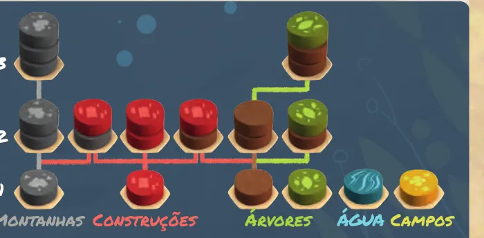
As pilhas permitidas, por altura (1, 2 e 3): montanhas de 1 a 3 cinzas; construções com a vermelha sobre cinza, vermelha ou marrom; árvores com a verde sobre 0, 1 ou 2 marrons; água e campo só no chão. As linhas mostram que pilha nasce de qual. Ilustração: manual Galápagos p. 4
Quanto vale cada paisagem (p. 8; detalhes na etapa 3):
Paisagem
Como se forma
Pontos
Árvore
Verde sobre 0, 1 ou 2 marrons
Tamanho 1: 1; tamanho 2: 3; tamanho 3: 7
Montanha
1, 2 ou 3 cinzas
Altura 1: 1; altura 2: 3; altura 3: 7; isolada de outras montanhas: 0
Campo
2 ou mais amarelas vizinhas
5 por grupo, de qualquer tamanho
Construção
Vermelha sobre cinza, marrom ou vermelha
5, se os vizinhos tiverem pelo menos 3 cores diferentes
Água, lado A
Peças azuis em fila (rio)
Pelo comprimento do seu maior rio
Água, lado B
Peças azuis que separam o tabuleiro (ilhas)
5 por ilha
Regra adicional: Peça debaixo da vermelhaRegra adicional: Vermelha sozinha no chãoVer um exemplo resolvidoPratique esta etapa: exercícios com respostas
3Etapa 2: animais
Por que funciona assim
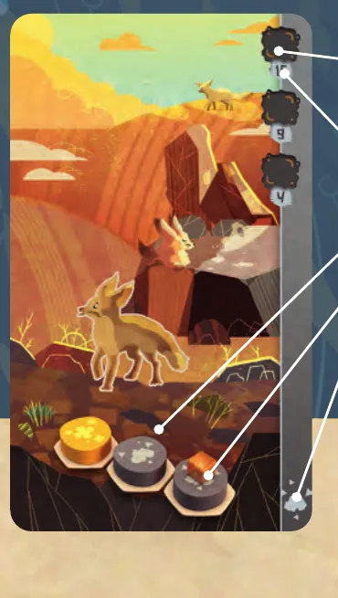
Uma carta de animal, a Raposa Feneco: na lateral, os espaços de cubo com os pontos (4, 9 e um terceiro valor, em cima); embaixo, o habitat (uma amarela e duas cinzas), com o cubo desenhado sobre a peça onde o animal vai; no pé da faixa, o lembrete da cor dessa peça. Ilustração: manual Galápagos p. 5
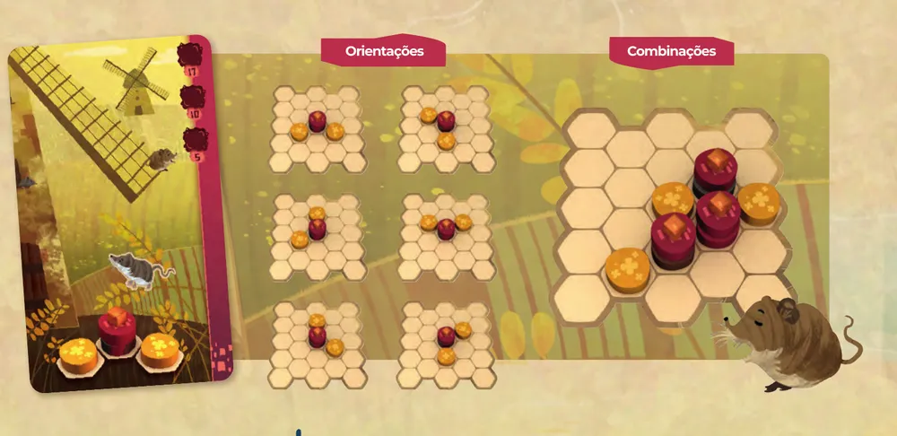
Orientações: o habitat do Musaranho (uma construção com uma amarela de cada lado, em ângulo, não em linha reta) aparece nas 6 posições em que pode ser girado. Combinações: 3 construções e 3 amarelas formam três habitats do Musaranho, porque as amarelas servem a mais de um. Ilustração: manual Galápagos p. 7Regra adicional: Uma peça, vários habitatsSobre a edição
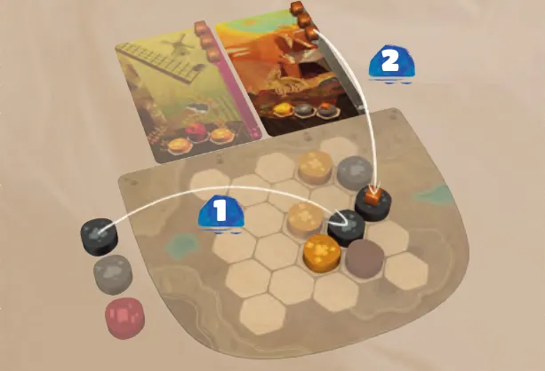
No exemplo do manual, Giulia pega 2 cinzas e 1 vermelha e põe uma das cinzas no tabuleiro (1); com isso forma o habitat da Raposa Feneco e põe um cubo nele (2). Ilustração: manual Galápagos p. 6
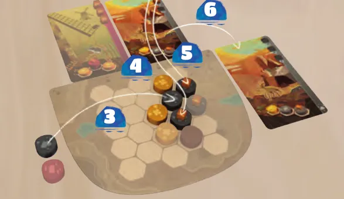
Continuação do exemplo do manual: Giulia põe mais uma cinza (3), forma o habitat outra vez e põe 2 cubos de Raposa Feneco (4 e 5). A carta fica sem cubos, completa, e vai para o lado do tabuleiro (6). Ilustração: manual Galápagos p. 6Ver um exemplo resolvidoPratique esta etapa: exercícios com respostas
4Etapa 3: fim da partida e pontos
Por que funciona assim
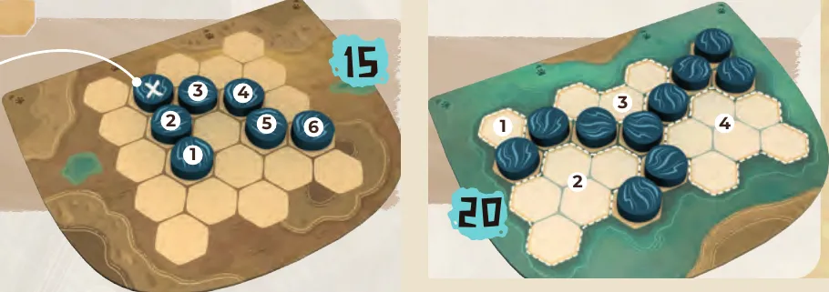
À esquerda, o lado A: o rio de 6 peças conta 15; a azul marcada com X fica fora do caminho mais curto e não conta. À direita, o lado B: as azuis dividem o tabuleiro em 4 ilhas, que valem 20 pontos. Ilustração: manual Galápagos p. 8Regra adicional: Rio em anelRegra adicional: A água no lado B, as ilhas
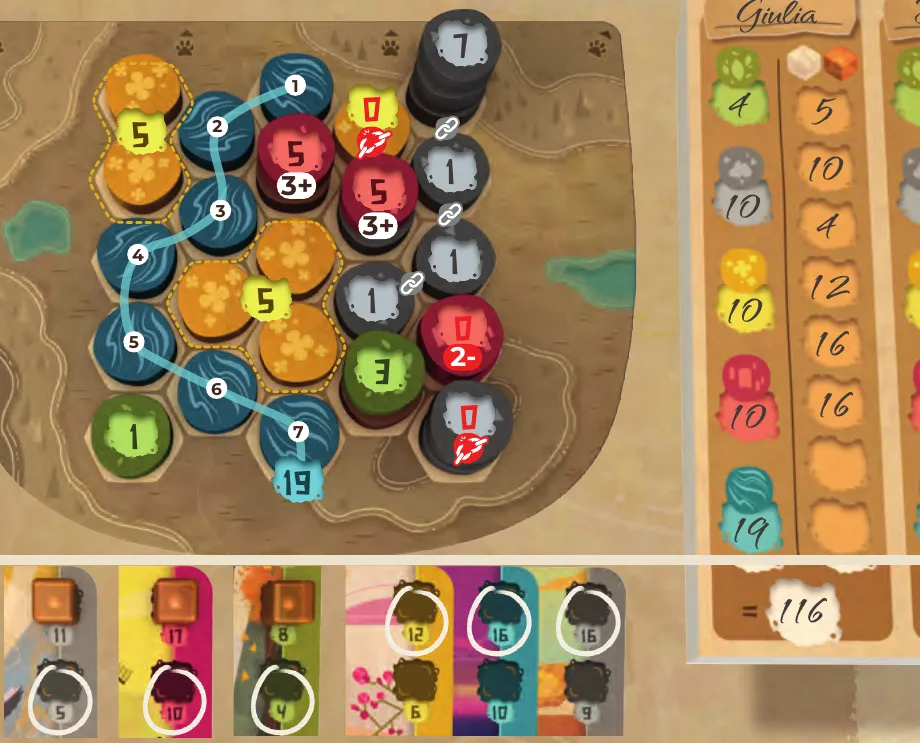
O tabuleiro de Giulia no fim da partida, com o valor de cada paisagem marcado; embaixo, as cartas de animais com o espaço que conta circulado; ao lado, a folha com os pontos de cada tipo e o total, 116. Ilustração: manual Galápagos p. 9Ver um exemplo resolvidoPratique esta etapa: exercícios com respostas
5Situações especiaisOpcional
Imagem: LibelludAbrir esta seçãoRegra adicional: Espíritos da natureza (variante)Regra adicional: Cubos de animais acabaramSobre a edição: Errata oficial (v1.0, 04/24)Regra adicional: Modo solo, o turnoSobre a edição: O que o manual não dizDica
6Avaliação finalOpcional
Imagem: LibelludAbrir esta seção
Responda sem consultar. Cada resposta diz o que reler.
1. Partida de 2 jogadores. Quantos espaços do tabuleiro central recebem peças e quantas cartas de animais ficam abertas?
5 e 5: o lado de 2-4 jogadores tem 5 espaços de 3 peças, e há 5 cartas abertas; 3 e 3 é o solo p. 2, 3 e 11. Releia a montagem.
2. Onde uma peça verde pode ir?
Num espaço vazio ou sobre 1 ou 2 marronsp. 4. Releia a etapa 1.
3. Você ainda não pegou carta neste turno e tem 3 cartas acima do tabuleiro. Pode pegar uma entre a primeira e a segunda peça?
Pode. As ações opcionais podem ser feitas entre uma peça e outra, e o limite é 4 p. 4, 5 e 12. Releia a etapa 2.
4. Uma construção na borda tem 4 vizinhos: azul, azul, amarela e um espaço vazio (peças de cima). Quanto vale?
0: há só 2 cores (azul e amarela); espaço vazio não conta. Precisa de 3 cores p. 8. Releia a etapa 3.
5. A carta do Musaranho tem 3 espaços (17, 10 e 5, de cima para baixo) e você pôs 2 cubos. Quanto ela vale no fim?
10: os cubos saem de baixo, e vale o espaço mais alto sem cubo, que é o 10; os números não se somam p. 6 e 9. Releia as etapas 2 e 3.
7Para consultar durante a partida
Imagem: Libellud
Preparação: tabuleiro central lado 2-4 (solo: lado Solo), 3 peças sorteadas em cada espaço; o resto na bolsa. 5 cartas de animais abertas (solo: 3), pilha de compra, cubos na reserva. Tabuleiros pessoais todos do mesmo lado (A nas primeiras partidas). A seta aponta o primeiro jogador; sentido horário.
No seu turno, em qualquer ordem:
Obrigatório, uma vez: pegar as 3 peças de um espaço do tabuleiro central e pôr as 3 no seu tabuleiro.
Opcional, uma vez: pegar 1 carta de animal, cobrir os espaços dela com cubos (máximo 4 cartas acima do tabuleiro).
Opcional, quantas vezes puder: com o habitat no tabuleiro (girado vale, alturas exatas), tirar o cubo de baixo da carta e pôr na peça indicada. Carta sem cubos: completa, sai do limite.
Empilhar: cinza sobre cinza (até 3); marrom sobre 1 marrom (no máximo 2); verde sobre 1 ou 2 marrons; vermelha sobre uma única cinza, marrom ou vermelha. Azul e amarela só no chão. Nunca embaixo de peça, nunca onde há cubo.
Fim do turno: 3 peças da bolsa no espaço vazio do tabuleiro central; fileira de cartas de volta a 5.
Fim da partida: bolsa vazia ao reabastecer, ou alguém com 2 ou menos espaços vazios (sem peça) no fim do turno. Completar a rodada. Empate: mais cubos posicionados; depois, vitória dividida.
Pontos: árvore 1, 3, 7. Montanha 1, 3, 7 (isolada 0). Campo 5 por grupo de 2 ou mais. Construção 5 com 3 ou mais cores em volta (peça de cima). Rio (lado A): 0, 2, 5, 8, 11, 15 para 1 a 6 peças, mais 4 por peça; só o maior. Ilhas (lado B): 5 cada. Animais: o espaço mais alto sem cubo.
8Fontes
Imagem: Libellud
Galápagos. Harmonies: regras do jogo (edição brasileira, arquivo HRM001_regras_v2.0.pdf, 12 páginas em 7 páginas de PDF, criado em 04/06/2024; tradução de Mateus Ornellas, revisão de Luis Perdomo e Camila Loricchio). Biblioteca de Downloads da Asmodee Brasil, https://www.asmodee.com.br/download-library, item "HRM001 - Harmonies - SKU: HRM001", etiqueta Regras. Consultado em 05/11/2026.
Galápagos. Errata oficial Harmonies v1.0 (04/24), arquivo HRM001_ERRATA_v1.0_04-24.pdf. Mesma biblioteca e item, etiqueta Errata. Consultado em 05/11/2026.
Libellud. Harmonies: rules (manual original em inglês, arquivo HARMONIES_Rules_EN_compressed-1.pdf), usado só para conferir dúvidas de tradução, e página do produto (jogadores, idade e duração), https://www.libellud.com/game/harmonies/. Consultados em 05/11/2026.
Libellud. FAQ oficial da página do produto (5 perguntas, em inglês: símbolos do tabuleiro central, rio com braços, rio em anel, cubos de animais, cartas de espíritos da natureza), https://www.libellud.com/game/harmonies/. Consultado em 05/11/2026.
Regras conferidas no livro de regras da edição brasileira da Galápagos (arquivo HRM001 v2.0, de 2024, tradução de Mateus Ornellas), baixado da Biblioteca de Downloads da Asmodee Brasil, e na errata oficial v1.0 (04/24). As páginas citadas são as do livro: a capa é a p. 1, e a "Ajuda ao jogador", no verso, é a p. 12.